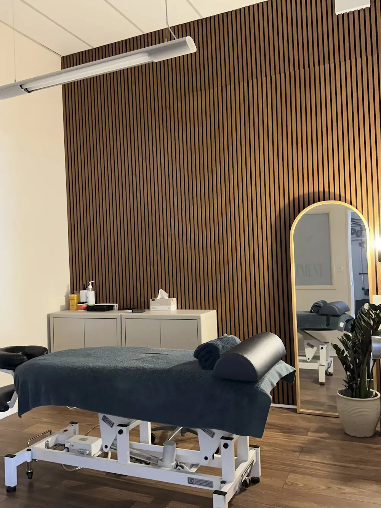

Remedial Massage
In Subiaco.
Movement is Medicine, From Your First Session
At SOLIS, remedial massage isn't a stand-alone service - it's the first step in a philosophy we call Movement is Medicine. Every session starts with a conversation about your goals, whether that's living pain-free, moving better, or simply getting through a workday without discomfort. From there, we use range of motion, strength and orthopaedic tests to establish a clear, measurable baseline - not guesswork, but a real picture of where your body is starting from.
This is what makes remedial massage at SOLIS different: it's not just treatment, it's assessment. By testing before and after we work on a specific muscle, joint or tendon connected to your goal, we can see in real time, whether what we're doing is actually working. If a technique doesn't make a change, we adjust. If it does, we know exactly what to build on next.

Treating the Person, Not the Condition
This is the heart of our second pillar, Resilience - building a body (and a mindset) that can handle life's demands, not just managing symptoms as they arise. We treat the person in front of us, not a diagnosis or scan results. That means understanding your history, your restrictions, and what "better" actually looks like for you specifically.
How you understand your pain shapes how you experience it. Pain originates in the brain, not just the tissue - it's a protective signal, not a direct measure of damage. Many clients arrive believing certain movements are dangerous, that their body is fragile, or that pain means something is broken, beliefs often reinforced by outdated advice to simply rest or avoid what hurts - creating a fear avoidance cycle.
We explain what we're finding, why we're treating a particular area, and what the test results mean, because clients who understand what's happening in their own bodies get better, more lasting outcomes. This collaborative approach, working with you, not just on you - is consistently what sets the SOLIS experience apart.

What Comes Next - With Intention
Every remedial massage session closes with a clear plan, reflecting our third pillar, Intention. Nothing we do is guess work - each recommendation is tied directly back to your goals and what the testing has shown us. For most clients, that plan centres on movement and lifestyle changes; for others, it includes continued hands-on therapy or a progression into structured strength and conditioning.
At SOLIS, remedial massage is the starting point for real, lasting change - not a temporary fix. It's about moving without fear, understanding the beliefs that shape your pain, and building a body that holds up to life.
Book Your Remedial Massage